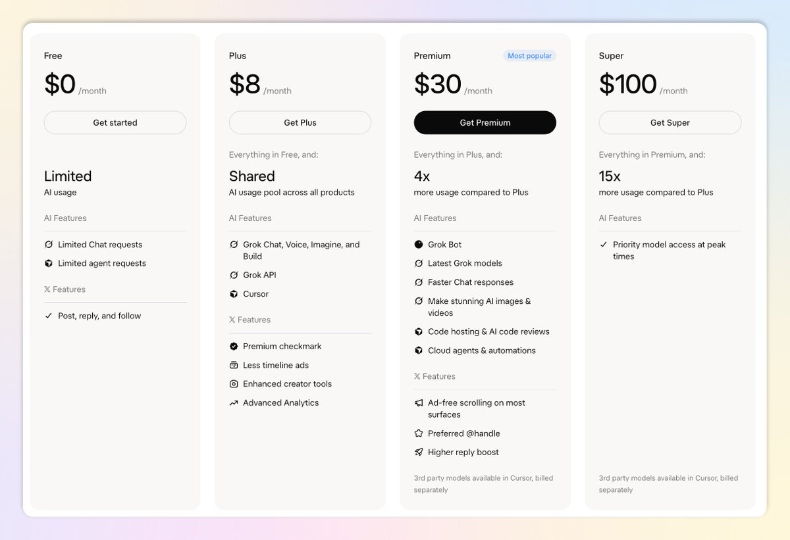

西堂 picks · 7/24
马斯克的“大一统AI会员”来了！新手小白和老用户该怎么选？一站式搞定 Grok Bot、X 会员、Cursor 会员！
@KinGao476942 · Kin · Tue Oct 13 01:53:32 +0000 2026
10月12日，xAI 正式推出“SpaceXSI 超级会员”（官方名：The X Subscription），新的大一统 X 订阅终于出来了！
一句话总结：只需一次订阅，就能同时拥有 Grok Bot (xAI's AI assistant that comes with its own computer)、X 会员权益、Cursor 会员资格！最低只要 $8/月，最高 $200/月 可拉满 50X 用量！首月还有 5 折优惠，特别适合新手试水。

这是马斯克生态的终极合并版——之前 X Premium、Grok Plus/SuperGrok、Cursor 各自独立，被很多人吐槽，现在统一了。订阅入口直接在 x.ai/pricing（Grok 官方定价页），超级简单！
很多新手朋友和老用户不知道怎么选更划算，因此我特意写了一篇 X 文章分享给大家。
开始前我先介绍下自己，我是 Kin，SpaceXAI（前 Cursor）的认证大使，过去两年和其他大使一起举办了 20 多场线下活动。
我在推特经常分享 Grok bot 和其他好用 AI 工具的使用技巧和教程，如果你对 AI 感兴趣，欢迎眼熟关注 ～
话不多说，马上进入正题！
新手小白该怎么选？（推荐入门级）
新手肯定不想一次性花大钱，先从最便宜的 Plus 计划开始！
- 首选：Plus ($8/月，首月 5 折 = $4)，包含：Grok Chat、Voice、Imagine、Build、Grok API (a way for programs to talk to each other)、Cursor（基础 Agent (an AI that takes steps on its own to finish a task)）X 权益：Premium checkmark + 少量广告 + 高级创作者工具完美适合：刚接触 AI 的小白，想先试用 Grok 聊天、生成图片视频、简单代码审查、够日常用。
- 升级到 Premium ($30/月)，如果你想要用云电脑的 Grok bot、玩得开心（Grok Bot、AI 图片视频、代码托管、云 Agent），直接冲这个！4x 用量 + 更多高级功能，性价比最高。首月还是 5 折，超级香！
- 别急着上更高阶：Super($100)、Ultra ($200)， 基本是“重度玩家”专属，这用量是给每天重度 Agent 的程序员/创作者的。新手可以先低调入门，不够用再升级最划算。
小白选购小贴士：
- 首月 5 折 （官方规则），直接冲！
- 已经玩腻免费版、想让 Grok Bot 每天帮你干活（写代码、生成视频、Agent 军团），Plus 就够；想深度用就上 Premium。
- 企业/团队？直接看 Teams 计划（$30+/人）。
老用户该怎么选？（已经用 X Premium / Cursor / SuperGrok (xAI's paid subscription plan) 的怎么办？）
老用户很多文如何切换，目前官方已经支持可以零成本切换，专门给你们开放切换通道！
- 已经在用 X Premium：直接从 Plus/Premium 切换，旧订阅按比例退款（Pro-rated refund）。X 权益保留，Grok/Cursor 直接加进来，用量池共享。
- 已经在用 Cursor：同样从官方 dashboard 切换。
- 已经在用 SuperGrok：同理，旧套餐按比例退款。
具体操作：
去 x.ai/pricing 或 Grok dashboard（你原来的 billing 页面），选择新 tier 升级/切换。官方明确：“新自助服务客户可自由选择是否切换到 The X Subscription 计划。现有 Cursor、SuperGrok 和 X Premium 计划继续有效，除非你更改或取消。”
切换后，Grok Bot、X 会员、Cursor 全部到手！超方便。
老用户升级建议：
- 想一键拥有所有权益但不想多花钱？直接切 Plus（$8），很多老用户已经从独立订阅降级到这个档次，钱包更舒服。
- 重度玩家（每天高用量、需要 Grok Bot 云电脑+Cursor 深度集成）？直接冲 Super 或 Ultra，50x 用量 + 优先模型，彻底拉满。
- 老用户如果只是偶尔用 Premium 功能，Plus 就够继续玩；想极致体验就上 Ultra（$200/月，首月 5 折）。
老用户之前买的 Heavy 怎么办？
之前独立版还有 SuperGrok Heavy（$300/月），曾经一度打折（$100/月） ，那是专为重度程序员/创作者的顶级模型专享（Grok 4 Heavy 优先访问、更高优先级）。
如果你是老用户切换后，钱包会省下很多（原来 $300 降到 $200 即可拉满 50x 用量 + 所有权益）。
升级建议：要注意第三方 Cursor 用量（以前的第三方模型），官方确认：现在不包含在月费里！请注意看自己的剩余用量，看是否值得切换，建议可以和 Grok 具体聊一下自己的情况！！
- Plus/Premium/Super/Ultra：第三方模型在 Cursor 里按 API 原价单独计费（Grok 官方模型除外）。
- Teams 计划：额外 $0.25/百万 tokens（对第三方模型）。 以前独立 Cursor Pro 或 SuperGrok 可能包含部分额度 (quota (how much use your plan allows))，现在统一后第三方全部 API 计费，老用户切换时，需要注意余额。建议：用 Grok 官方模型避开额外计费，或在 Cursor 设置里添加 xAI API Key 手动管理。
如果老用户不升级，会不会被迫升级？
不会！完全可选。
官方明确表示说：
“Switching is optional. If you don’t switch, your current plan continues unless you change or cancel it.”
你的 X Premium、Cursor 或 SuperGrok 旧套餐会继续有效，直到你手动修改或取消。无需强制升级，老用户可以继续玩独立权益，享受 The X Subscription 的所有便利（共享用量池等）。
中国用户怎么支付？
官方支付选项：x.ai/pricing 页面明确说明——Self-serve plans 支持所有主要信用卡和借记卡（包括 Visa和万事达卡）。
价格不含税费，税费会在结账时自动添加。支持 Stripe 等处理器，Apple/Google 内购（如果通过 App 订阅）也可用。
具体操作：
- 跳转到 https://x.ai/pricing 页面
- 结账页面会弹出 Visa 卡支付界面（浏览器模式最稳）。
- 输入你的招商银行 Visa 卡卡号、有效期、CVV、持卡人姓名（与银行卡完全一致）。
- 确认支付后，首月 5 折自动扣款，7 天无条件退款随时可用。
- 支付成功后，订阅立即生效（可通过 x.ai/pricing 管理）。
注意事项：
- 需科学上网（VPN）才能访问 x.ai/pricing 页面。
- 绑定账单地址时，建议填美国地址（或真实住址）。
- 招商银行 Visa 卡跨境交易已升级支持外币直接入账（人民币结算），操作更顺畅。
- 老用户切换时，旧支付方式会自动退款到原卡，新支付走新通道。
一句话总结：新手就从 Plus 冲起，不够再进行升级！
老用户可以自主选择是否切换到新套餐，官方已经给了切换入口，剩余额度会退款。
如果想要大一统可以切换，但旧有套餐有第三方模型的用量，最好需要根据剩余用量再对比决定。
本文参考链接：https://x.ai/pricing
Source: https://x.com/KinGao476942/status/2109824830698848561
← 如何把 Grok Bot 接入你的微信？保姆级新手指南来了（附详细提示词） 如何把 Grok bot 军团连接到你的飞书？保姆级新手教程 →